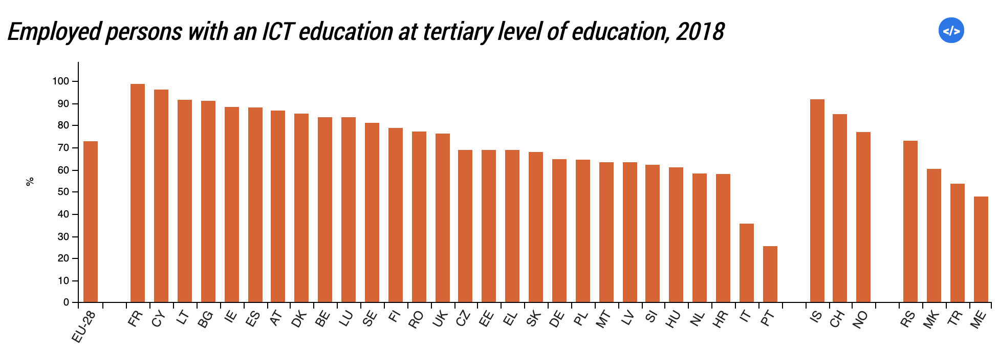

Project
- BASIC PROGRAMMING APPLICATION -
Overview
Today there are many people who are passionate about information technology but they absolutely do not know where to start. The main thing that made them not much interested in IT majors. This is a specialized application for those who want to learn about programmers but do not know where to start and search for lessons where is right. This application is a collection of lessons about all types of programming, all types of programming languages. Besides, the lessons in this application are censored very carefully and it helps users to learn most effectively with it. Because of that, it is really useful because it saves time and money for learning information technology.
Motivation
This will definitely be an extremely useful and effective project for users. Because we should look at the current situation of the information technology industry. Not only in Vietnam but also in the world, there are millions of people who have the desire, passion and desire for information technology to find a good job. But their biggest drawback is their source of learning about it. Many people choose to study online or to take extra classes at technology training furnaces, but most of them do not work for them. The main cause of that problem is the lack of credibility in the lessons they gain. And that's also the reason for me to develop this application, an application that summarizes all information about learning IT for people from basic to advanced levels, and especially the lessons are carefully censored. more to bring the best effect to users.
Description
This is a project about developing an application to help IT enthusiasts learn from the most basic to advanced levels to become a programming master. BASIC PROGRAMMING APPLICATION (BPA) is the app to do that. With the cooperation of MIT App Inventor, the application can run simultaneously on two platforms, Android and IOS and be flexible between devices such as phones and computers. This application is like a huge data warehouse about the information technology world. On the one hand, data users can buy access to this application very cheaply and from there they are free to use the great resources of prestige to learn about information technology. In addition, with public security, lecture information and user information will not be exposed. My project is based on the lack of necessary information about IT on most websites in Vietnam. Vietnamese people are facing a lot of difficulties in finding a reliable source and wasting a lot of time to do so. They really want to learn IT but they don't know where are the necessary lectures. Projects are part of the convenience of our lives. In addition, many companies not only in Vietnam but also worldwide use this application or website to search for official information. In addition, to improve users, our company offers a lot of attractive gift certificates when downloading the app for the first time. To do this, my companies encourage other businesses or organizations to lend us money. To expand my project, I look for other businesses overseas to connect and find a bigger investor in the future. Most users are most teenagers because they are the most internet users. To best expand the market, developing countries are my company's top priority because most of the population in these countries is about 18-25 years old. These countries are rich in potential in the number of people who want to study information technology. On the other hand, this app also helps potential programmers earn extra income by posting their own lectures on the application. In fact, there are a lot of great lectures by programmers but because the security is weak, they are often stolen and duplicated by hackers. Therefore, when they post a lecture (BPA), they will enjoy absolute security privileges to prevent theft. Besides, they can also earn additional income from the number of people who visit and learn from their lectures through this app. Moreover, this application was developed to be compatible both offline and online to help users can use them anytime and anywhere.
Tools and Technologies
BASIC PROGRAMMING APPLICATION (BPA) is an extremely advanced technology application. It is powered by the MIT App Inventor processing environment technology and powered by google, allowing writers to build applications right from their phones. In addition, MIT App Inventor is a native web application development environment provided by Google and is currently maintained by the Massachusetts Institute of Technology (MIT). It allows computer programmers to create application software (applications) for two operating systems (OSs): Android and iOS. This is free and open-source software released under a dual license: Unported Attribution ShareAlike 3.0 Unported License and Apache 2.0 License for source code. Moreover, in conjunction with the MIT App Inventor compatibility, "BPA" uses a graphical user interface (GUI) very similar to the Scratch programming language and StarLogo TNG user interface, allowing users to drag and drop visual objects to create an application that can run on the device be mobile.

Skills Required
Any business that wants to grow will always need more customers. And more and more customers are searching online for solutions to their problems. Therefore, the BASIC PROGRAMMING APPLICATION (BPA) management team also needs a lot of soft skills in application management such as (Content Management Systems (CMS)); (Cascading Style Sheets (CSS)); (Website Analytics, Search Engine Optimization (SEO)), these are all necessary skills to control the system (BPA). Not only that, the application writing team (BPA) also requires some high-tech computer skills, often referred to more specifically as coding skills. To do this the programmer must be able to analyze user needs and find useful results for them. Employees need to be familiar with different coding languages and web technologies such as (Automation Software); (Software Programming); (C ++); (CISC and RISC Architecture); (Embedded Processor Hardware Design); (Hardware Description Language (HDL)).
Outcome
This is a project with a lot of potential for effective success because of its usefulness. A very easy application for users to receive knowledge most effectively. Below are preliminary statistics based on the growth of future IT needs. Sometimes there is a sharp increase by first-time users (BPA) and they actually experience it. In the following years, that number is still growing because of the spread of this application.
Expected revenue
| Year | The number of user | Price |
|---|---|---|
| 2030 | 1,543,656 peoples | 29.99 |
| 2036 | 2,423,123 peoples | 54,31 |
| 2045 | 4,657,878 peoples | 67,99 |
| 2052 | 5,134,353 peoples | 76,19 |
| 2060 | 7,154,652 peoples | 84,54 |
| 100,00 |
- © Genm
- Design: Nguyen Longg